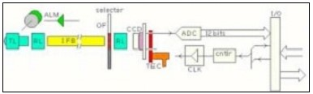
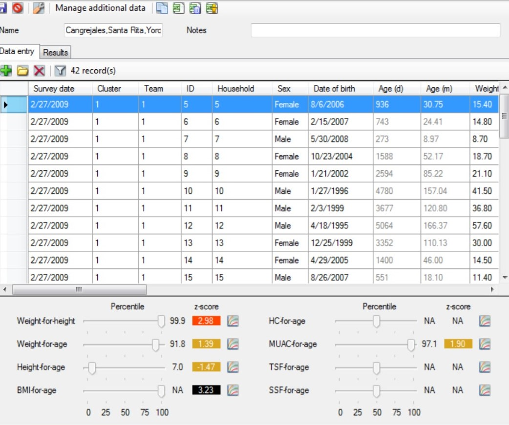
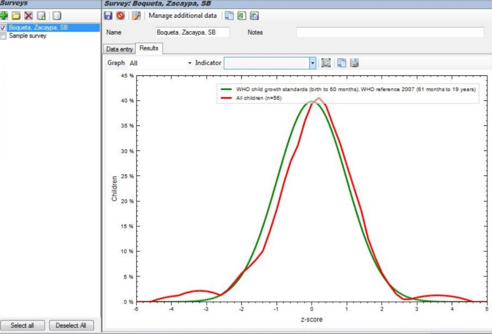

Semana 1
Toda disciplina deportiva exige de cada individuo cierta estructura y silueta corporal para lograr un buen desempeño. En consecuencia, un adecuado control y vigilancia de la composición corporal se puede traducir en importantes beneficios para los atletas, tanto en la optimización de su rendimiento como en la salud. (Rodríguez A., 2004)(21) La determinación de la forma del físico a partir de variables antropométricas también es una parte importante en la evaluación integral de un atleta y constituye en si mismo un elemento que puede ser empleado para la detección y selección, para la ubicación del deportista en una disciplina o en una posición especifica. Las ventajas que proporciona una adecuada morfología son evidentes (Kerr, y Cols, 1995)(23). La evaluación de la composición corporal en los atletas puede ayudar a optimizar el rendimiento competitivo y controlar el éxito de los regímenes de entrenamiento y por ello, es de gran importancia para los profesionales del deporte.

La composición corporal mejorada en los atletas se asocia con mejoras en la aptitud cardiorrespiratoria y la fuerza. La composición corporal también puede estar relacionada con complicaciones de salud, porque pueden surgir problemas médicos en atletas con muy poca masa corporal, cambios de masa extrema debido a deshidratación o trastornos alimenticios. La idea detrás de la biometría aplicada al deporte es recolectar la mayor cantidad posible de datos biométricos de los atletas para mejorar su rendimiento. Para dicha tarea se han comenzado a desarrollar dispositivos con complejos sensores para analizar a los atletas. Desde una simple pulsera, hasta equipos más complejos posicionados en el pecho. Estos equipos se encargan de medir parámetros tan diversos como ritmo cardíaco, temperatura corporal, calorías quemadas, ritmo de respiración, patrones de sueño, etc.
Referencias“La biometría en el deporte”. En: ex-cle.com. Disponible en:http://www.ex-cle.com/la-biometria-en-el-deporte/Consultado: 29 de agosto de 2019, 06:03 pm.
“Criterios biométricos para la selección de futbolistas”. En: repositoriodigital.ipn.mx. Disponible en:https://www.repositoriodigital.ipn.mx/bitstream/123456789/8970/1/TESIS%20IVAN.pdfConsultado: 29 de agosto de 2019, 06:03 pm.
Diana A. Santos, John A. Dawson, Catarina N. Matias, Paulo M. Rocha, Cláudia S. Minderico, David B. Allison, Luís B. Sardinha, Analiza M. Silva. (May 15, 2014). Reference Values for Body Composition and Anthropometric Measurements in Athletes. PLOS.Consulta: 29 de Agosto.

Semana 2
Praesent id pellentesque est. Etiam vestibulum eros quis vulputate convallis. Praesent quam diam, placerat a ipsum sed, facilisis dignissim lorem. Vivamus a elit vitae mauris fringilla scelerisque sit amet eget mauris. Suspendisse vulputate congue eleifend.
ReferenciasSemana 3
DEFINICION DEL PROBLEMA
(problematica)
ESTADO DEL ARTE
MYSIGNALS:
MySignals es la idea ganadora del Premio eSalud 2016 a la mejor iniciativa que revolucione los tratamientos médicos organizado por la Asociación de Investigadores en eSalud (AIES). Esta innovación consta de un sistema de 15 sensores para medir 20 parámetros biomédicos, tales como: ritmo cardiaco, glucosa, flujo de aire, oxígeno en sangre, presión sanguínea, capacidad pulmonar, temperatura, electrocardiograma, electromiograma, peso, masa ósea, grasa corporal, masa muscular, agua corporal, grasa visceral, tasa metabólica basal e índice de masa corporal. Todos estos parámetros son enviados a la nube de tal forma que un especialista pueda interpretarlos en tiempo real; además, ésta información está disponible para ser revisada por el usuario final. Y, como valor agregado, todas las conexiones operan en una unidad central que monitorea el flujo de datos.

Figura 1. Ganadores del concurso eSalud con la idea de innovación MySignals.
GUÍA PRÁTICA DE DEPORTISTAS DE ALTO RENDIMIENTO:
La Guía de Nutrición para deportistas de alto rendimiento propuesto por el Grupo de Trabajo sobre Nutrición del Comité Olímpico Internacional fue propuesta en 2012 como preparación para los Juegos Olímpicos de Londres de ese año. En esta guía se especifica la cantidad de energía que el organismo debe producir dependiendo de la actividad física que se realiza, como se puede mantener esa energía para evitar consecuencias como pérdida de masa ósea o el deterioro de actividades hormonales, inmunológicas y metabólicas. Además, se clarifica como mantener o ganar musculatura y perder grasa corporal, la cual, es la que otorga peso por lo general a los deportistas. NOTA: Si bien esta solución no es un sistema para la adquisición de parámetros biométricos, se desea tener en cuenta que la información brindada por esta organización soluciona indirectamente problemas relacionados con el desarrollo físico de los atletas, por lo que siguiendo una guía básica y manteniendo un control periódico se puede mejorar la toma de los datos biométricos de los cuales se basa el problema del proyecto.

Figura 2. Cubierta de guía de nutrición para deportistas.
SISTEMAS BIOMÉTRICOS:
Los sistemas biométricos son aquellos capaces de reconocer una característica exclusiva de una persona, y, en especial la revisión que se presenta en esta sección analiza diferentes formas de sistemas, por ejemplo: reconocimiento de huella dactilar, reconocimiento de cara. Reconocimiento de iris, retina, geometría de dedos y manos, autentificación de voz y reconocimiento de firma. Cada uno de estos sistemas consta de dos partes fundamentales en contexto; el funcionamiento y los sensores utilizados para hallar los parámetros. La morfología de la persona de la cual se obtienen dichos datos es la información a tratar más importante del sistema, y la que influirá en la decisión del tratamiento de datos.
Figura 3. Diagrama correspondiente a cámara utilizada como sensor óptico.
Aplicando las tecnologías de información para la gestión de deportistas de alto rendimiento:
Es un sistema multiuso que busca crear una base de datos antropométricos de cada deportista. Como mencionan Fuentes Covarrubias et al. (2018) el propósito del proyecto es monitorear los avances y resultados logrados, así como generar un historial y un modelo de proporcionalidad antropométrica para deportistas. La aplicación permite acceder al sistema mediante un Login y añadir información personal y de identificación de los deportistas, así como registro deportivo, médico y físico. El lenguaje de programación usado para la aplicación web fue HyperText Markup Language (HTML) y la herramienta de software Axure para permitir la interacción amigable con el usuario.

Figura 4. Datos de entrenamiento del deportista
Software Anthro Plus:
Es un programa creado por la Organización Mundial de la Salud que permite comparar datos de peso, altura y longitudes con estándares de niños y adolescentes de 1 a 19 años con estándares de crecimiento de niños. Permite el ingreso de una base de datos en formato Texto Unicode acerca de parámetros como peso, altura según edad, talla así como algunas otras mediciones de pliegues cutáneos y perímetros (individuales como grupales). Con ello, el programa realiza cálculos y luego análisis estadísticos mediante gráficos e indicadores para que puedan ser interpretados.
 Figura 5. Software Anthro Plus
PROESPUESTAS DE SOLUCION
Propuesta de solución 1: Aplicativo móvil conversor de voz a texto capaz de organizar los datos en una hoja de Microsoft Excel conforme se registran. Esta aplicación para teléfono móvil 1)recibe como entrada la voz del usuario nombrando el parámetro y la medida correspondiente a este, 2) convierte la voz a texto y 3) genera una tabla de dos columnas adyacentes: una para el nombre del parámetro y una para la medida. Este sistema facilita la adquisición manual de medidas por un solo profesional y reduce el tiempo que toma registrar las medidas en la plantilla. La siguiente imagen describe con más detalle el proceso mediante un ejemplo:

Figura 6. Funcionamiento del aplicativo móvil conversor de voz a texto capaz de organizar los datos en una hoja de Microsoft Excel conforme se registran.
Propuesta de solución 2: Aplicativo móvil generador de un registro de bases de datos. Este aplicativo para teléfono móvil sistema recibe los datos antropométricos previamente tomados por el especialista y en base a ellos crea un registro con la información antropométrica de cada deportista y un historial para el mismo. Asimismo, coloca la información en tablas según parámetros como: deporte, edad, sexo, biotipo y antecedentes médicos. Además, elabora gráficos de cada medida antropométrica vs. tiempo para facilitar la visualización de los datos. La siguiente imagen describe con más detalle el proceso mediante un ejemplo:

Figura 7. Funcionamiento del aplicativo móvil generador de un registro de bases de datos.
Propuesta de solución 3: Sistema de recolección y tratamiento de información antropométrica basada en deportes. Este sistema consta de dos entradas fijas que son: los resúmenes de datos ingresados por los especialistas a un registro que almacena la información, y un tratado de los datos mediante estadística. Es decir, cada grupo de datos nuevos que se ingrese al programa servirá para la cantidad de datos estadísticos a tratar. Este sistema es capaz de distribuir las muestras eliminando los dos valores más pequeños y los dos valores más grandes para atletas de alto rendimiento. Adicionalmente, con estos datos, se puede predecir la suficiencia de algún interesado en formar parte de algún deporte. Este sistema se describe con el siguiente flujo:

Figura 8. Diagrama de flujo del sistema de recolección y tratamiento de datos antropométricos basados en deportes.
Pasos de los cuales solo los 5 primeros serán incluidos y tratados en este curso, debido a que el equipo no será responsable de la recolección de datos para el propio tratamiento
ReferenciasCongreso eSalud. Un sistema de sensores para medir 20 parámetros biomédicos, premio eSalud 2016. Consultado: 02 de Setiembre de 2019. Disponible en: https://laesalud.com/congreso/2016/premios-esalud/ehealth-awards-2016-boehringer-ingelheim-mysignals-sensores-parametros-biomedicos/
Grupo de Trabajo sobre Nutrición del Comité Olímpico Internacional. 2012. Nutrición para deportistas. Consultado: 4 de Setiembre de 2019. Disponible en: http://deporte.aragon.es/recursos/files/documentos/doc-areas_sociales/deporte_y_salud/guia_nutricion_deportistas.pdf
Tolosa B., Giz Á. Sistemas biométricos. Consultado: 4 de Setiembre de 2019. Disponible en: https://www.dsi.uclm.es/personal/MiguelFGraciani/mikicurri/Docencia%20/Bioinformatica/web_BIO/Documentacion/Trabajos/Biometria/Trabajo%20Biometria.pdf
Fuentes, A., Fuentes, G., Fuentes, J., Fuentes, R. (2018). Aplicando las tecnologías de información para la gestión de deportistas de alto rendimiento. Revista de I+D tecnológico, vol. 14. doix: https://doi.org/10.33412/idt.v14.2.2068
World Health Organization (2019). Referencia de crecimiento 5-19 años. Recuperado de: https://www.who.int/growthref/tools/en/

Semana 3
Mauris mollis urna sit amet eros pretium, a tincidunt tellus eleifend. Sed dictum sit amet sapien ut scelerisque. Duis vulputate elit vehicula nisl maximus eleifend. Suspendisse potenti. Aenean ut dui fermentum, pharetra quam vitae, placerat dolor. Curabitur at dolor sed felis lacinia ultricies sit amet vel sem.
Referencias
Vivamus euismod lorem
Food / ChefPellentesque nec orci in erat venenatis viverra. Vivamus in lorem et leo feugiat ullamcorper. Donec volutpat fermentum erat non aliquet. Cras fermentum, risus a blandit sodales, erat turpis eleifend lacus, venenatis mollis leo lorem vel eros. Quisque et sem tempus, feugiat urna iaculis, tempor metus.